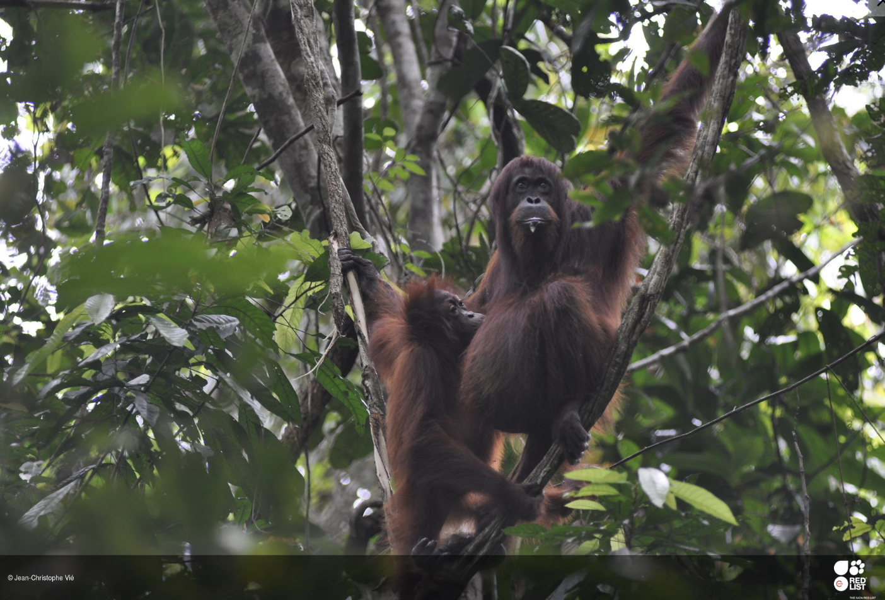

Borneo
Bornean Orangutan
Pongo pygmaeus
- Status: Critically Endangered
- Population trend: Decreasing
- Main threat: Habitat loss and fragmentation
- Key pressures: forest conversion, agriculture, plantations, and roads
The Bornean orangutan shows how habitat loss changes more than the amount of land available. When forests are split apart, orangutans also lose travel routes, nesting areas, food sources, and safer distance from human activity.[1]